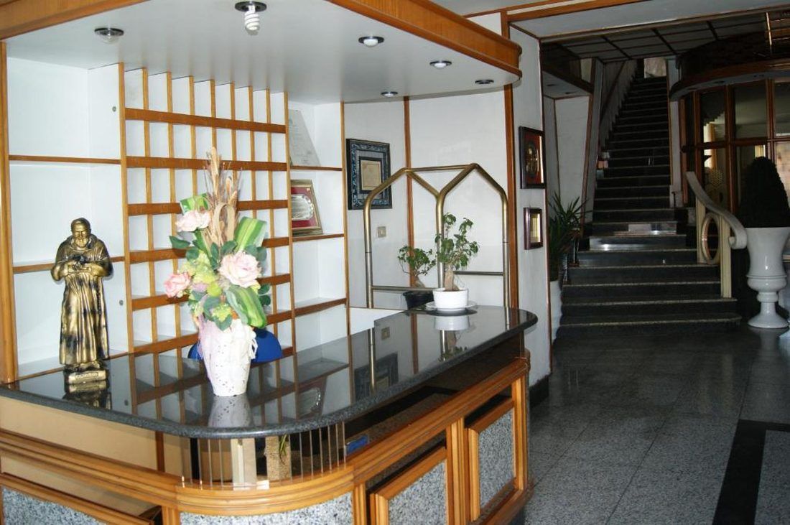
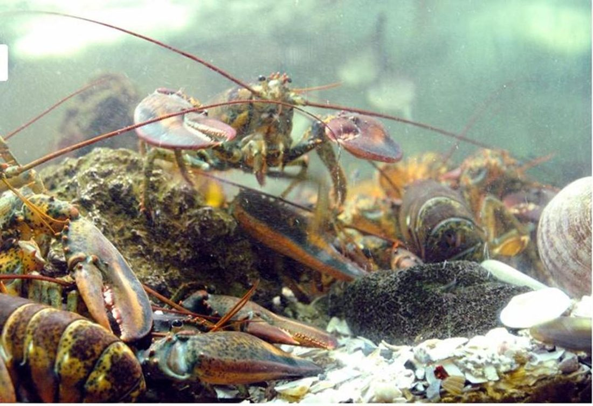
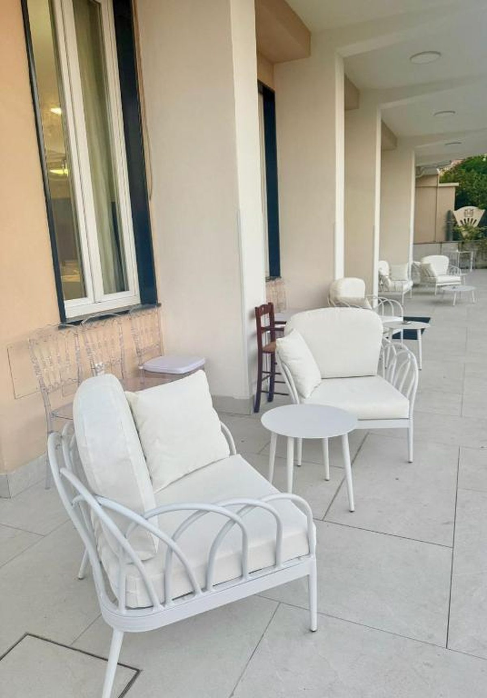
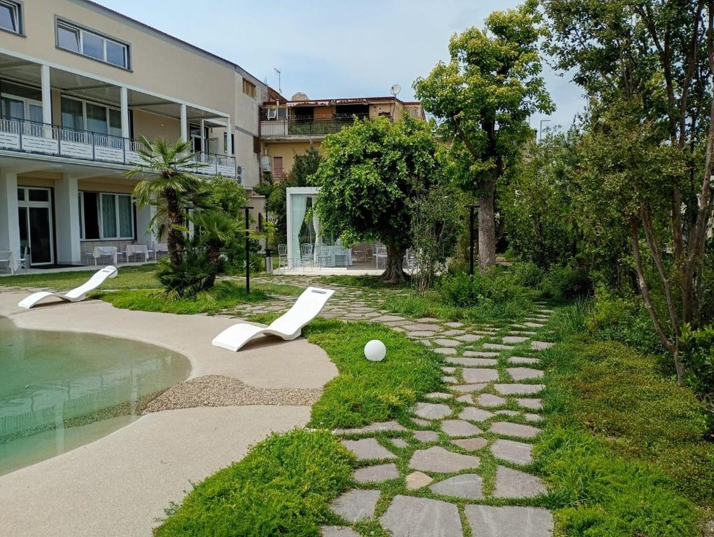
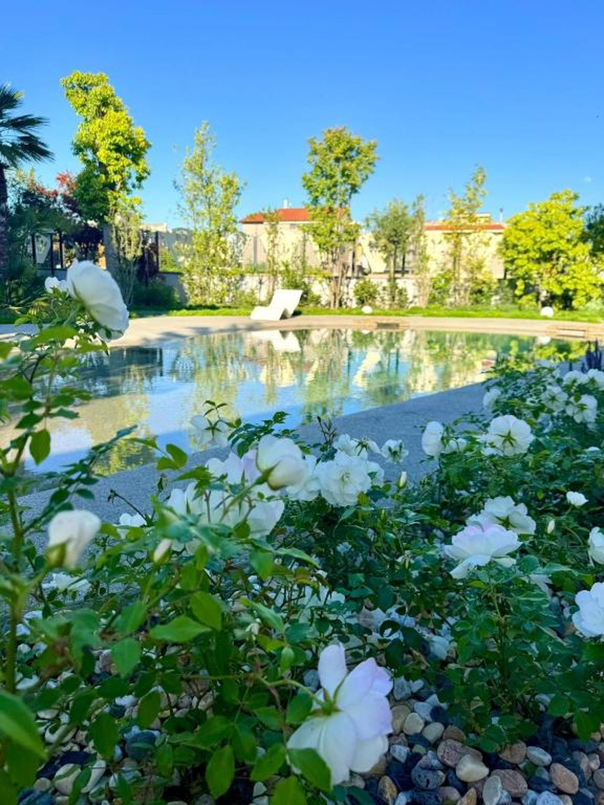
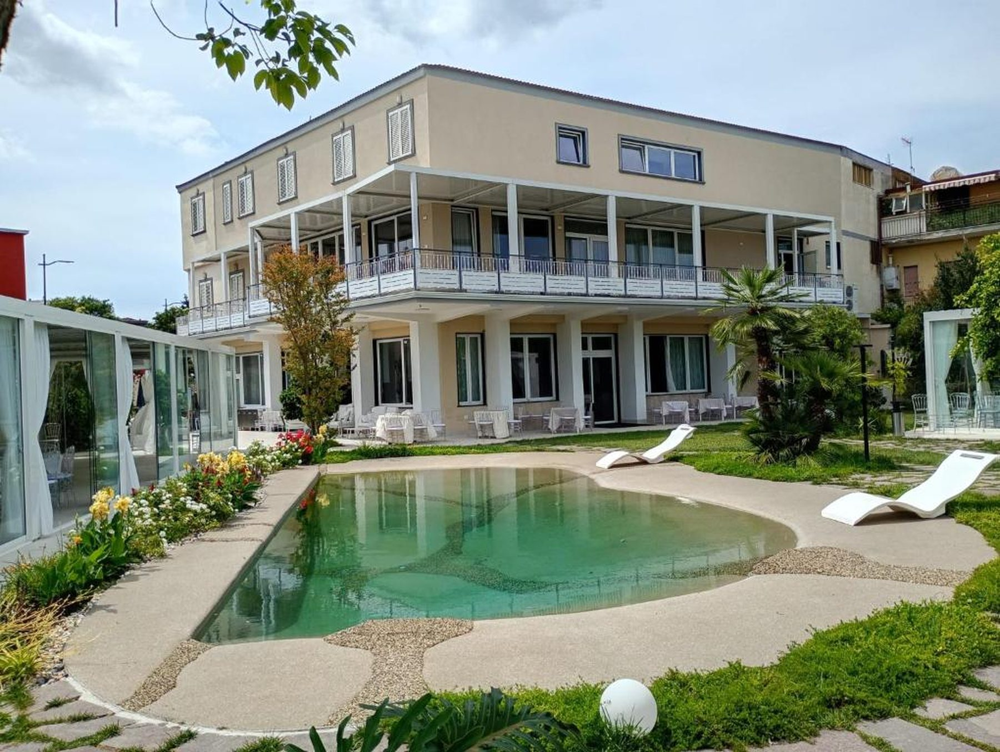

L'Albergo Ristorante Elio è una struttura molto accogliente, recentemente ristrutturata per assicurare ai propri ospiti il massimo comfort.
A disposizione della clientela c'è un garage interno gratuito e custodito. La professionalità e la cortesia del nostro staff garantiscono un'atmosfera familiare, grazie alla cura di ogni minimo dettaglio.
La reception è aperta 24 ore su 24 e il nostro personale parla italiano, inglese, tedesco, spagnolo e francese, per accogliere al meglio anche gli ospiti internazionali.


Siamo molto competitivi sul mercato e, grazie ad alcune convenzioni, serviamo la clientela business delle aziende della zona: il CIS di Nola, Alenia, l'Alfa Romeo, la FIAT Auto, Vulcano Buono Nola e l'Interporto Campano.
L'albergo è situato a pochi km dalla Stazione delle Ferrovie dello Stato e dalla Circumvesuviana. Grazie al servizio navetta e minibus di cui disponiamo, garantiamo percorsi diretti allo Stadio, agli scavi di Pompei ed Ercolano, a Napoli e a Sorrento.
Dove SiamoAccoglienza 24 ore su 24
Servizio bar per gli ospiti

Poltrone e spazi all'aperto

Verde curato con piscina

Area piscina e fioriture

La struttura vista giardino